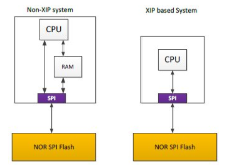
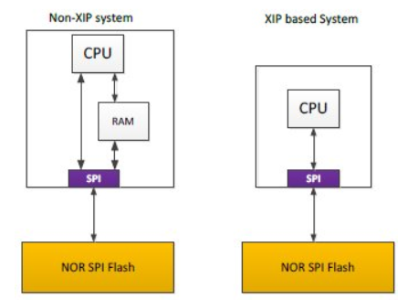

9.4. XIP Using Dummy App¶
9.4.1. Rom An Application¶
ROMing an application or running from XIP is running from a read-only memory - essentially XIP boils down to running an application from a read-only memory.
9.4.2. What is XIP?¶
 

In order to take advantage of the XIP mode, two conditions must be fulfilled:
The NOR flash (or flash device in general) device must support DAC mode
- The microcontroller’s SPI controller must support XIP mode
Burst mode of access - no byte access but a 32bit accesses only in XIP mode
As code must be in memory to be executed, XIP requires a memory-mappable device such as a RAM, ROM, or a NOR Flash.
The serial NOR flash memory is mapped in the microcontroller’s memory space and is seen as another memory by the processor.
9.4.2.1. Normal Mode v/s XIP Mode¶
From a SPI protocol perspective, a READ command is composed of three phases: instruction opcode, address and data. XIP mode requires only an address (no instruction) to output data, improving random access time and eliminating the need to shadow code onto RAM for fast execution.
9.4.3. Why XIP?¶
Improve startup/boot time - Initial time of copying code from flash to RAM is saved
Size of on-chip RAM will not limit the application size
NOTE: Slower than internal memory - 2.5 - 3x times worse than OCM
9.4.4. How to run an application in XIP (SYSBIOS)¶
This section takes a deeper dive into the intricate details of loading applications into the Flash memory and executing them using XIP.
NOTE : It is important to add the OSPI memory region to mpu.xs file - enable the memory region, mark it as cacheable and executable.
9.4.4.1. Section Placement¶
Attributes: r-x or r– => Load & Run in Flash Attributes: rw-, Init Length: 0 => Load & Run from RAM + Designate “noload” in .bin file Attributes: rw-, Init Length: nonzero => Load in Flash & Run from RAM
Reasons to have separate Load & Run sections 1. To restrict all write accesses to RAM. 2. To have the a tight binary which loads only from RAM.
The graphic below delineates the various section configurations appropriate for different applications.

9.4.4.2. Linker File Usage¶
NOTE: The “entry point” must be set as the (OSPI_base_address + Bin file offset) - e.g. 0x501C0000 for J721E
The graphic below illustrates the bit translation and the memory section placement performed by the linker file.
9.4.4.2.1. How to copy from load to run section at runtime¶
The only case when you need to copy the data from the Flash to the RAM at run time is when you have Read-write data which is also initialized.
You can do so by having different Load and Run addresses for a particular section.
The load address will be Flash (this will make the BIN small) and then the Run address will be in RAM (or any internal memory).
The copy then needs to happen manually using a copy_in(&table_name) function. This will copy the section from the Load address to Run address. And then let us say that there was a variable X which was in that section - the program when referencing X, will always look at its run address. So you need to copy before you access X.
Below is snippet for the main.c file where the copy happens and also the linker file where we mention different load and run sections.
Linker File
...
...
--entry_point=_resetvectors
...
...
MEMORY
{
...
...
XIP_FLASH_VECS (X) : origin=0x501c0000 length=0x40
XIP_FLASH : origin=0x501c0040 length=0x5C000 - 0x40
MSMC3_H (RWIX) : origin=0x70100000 length=0xE2000 /* 1MB -56K */
OCMRAM (RWIX) : origin=0x41C60000 length=0x20000 - 0x1000 /* ~124KB */
...
...
}
SECTIONS
{
...
...
.rstvectors : {} palign(8) > XIP_FLASH_VECS
.text_fast : {
*ti.board*aer5f(.text)
*ti.csl*aer5f(.text)
*ti.drv*aer5f(.text)
*ti.osal.aer5f(.text)
*ti.transport*aer5f(.text)
*sciclient.aer5f*(.text)
*(.text:ti_sysbios_family_arm_v7r_keystone3_Hwi*)
} palign(8) load = XIP_FLASH, run = OCMRAM, table(_text_fast_section)
.text_fast2 : {
*profinet_slave_stack_RT_MRP_AM65xx_r5f.lib*(.text)
} palign(8) load = XIP_FLASH , run = MSMC3_H, table(_text_fast2_section)
.text_fast3 : {
iPNDrv.obj(.text)
iPNLegacy.obj(.text)
iPNOs.obj(.text)
iPtcpDrv.obj(.text)
iRtcDrv.obj(.text)
iRtcDrv2.obj(.text)
*P_tirtos.obj(.text)
} palign(8) load = XIP_FLASH , run = OCMRAM_LOW, table(_text_fast3_section)
/* This is the region which will have all the copy tables */
.ovly : {} palign(128) load = XIP_FLASH
...
...
}
main.c
/* Needed for copy_in() function */
#include <cpy_tbl.h>
/* extern all the table sections */
extern COPY_TABLE _text_fast_section;
extern COPY_TABLE _text_fast2_section;
extern COPY_TABLE _text_fast3_section;
int main(void)
{
/* First thing in main - copies by looking at entries from the table _text_fast_section */
copy_in(&_text_fast_section);
/* First thing in main - copies by looking at entries from the table _text_fast2_section */
copy_in(&_text_fast2_section);
/* First thing in main - copies by looking at entries from the table _text_fast3_section */
copy_in(&_text_fast3_section);
:
:
/* Rest of the body */
}
9.4.4.3. Map File Usage¶
Build your application normally (non-xip) and then look at the attributes of different sections.
Section attributes (R/W/X) tell you exactly what sections can be placed where.
9.4.4.4. How To Flash¶
9.4.4.4.1. Installation¶
Install uniflash 6.1 from http://www.ti.com/tool/UNIFLASH
9.4.4.4.2. BootModes¶
MODE |
Switch Settings |
|---|---|
UART |
SW3: 0xxxxxxx, SW8: 00000000, SW9: 01110000 |
OSPI |
SW2: 0xxxxxxx, SW3: 00000000, SW9: 01000000 |
9.4.4.4.3. Steps To Flash¶
Change boot mode to UART boot mode.
- Connect to the 2nd instance of UART (/dev/ttyUSB1 in linux) and power on
You should see ‘CCC…’ being printed on the console.
Once validated, close this instance of the UART (the UART device needs to be free to transfer data)
- Navigate to the uniflash installed directory
dslite.sh should be present here
Run the following commands to flash
UART SBL and sysfw: ./dslite.sh --mode processors -c /dev/ttyUSB1 -f <pathToUniflashDirectory>/processors/FlashWriter/j721e_evm/uart_j721e_evm_flash_programmer_release.tiimage -i 0 CUST SBL: ./dslite.sh --mode processors -c /dev/ttyUSB1 -f <pathToPDKRepo>/pdk/packages/ti/boot/sbl/binary/j721e_evm/cust/bin/sbl_cust_img_mcu1_0_release.tiimage -d 3 -o 0 tifs.bin: ./dslite.sh --mode processors -c /dev/ttyUSB1 -f <pathToPDKRepo>/pdk/packages/ti/drv/sciclient/soc/V1/tifs.bin -d 3 -o 80000 sbl_boot_xip_entry: ./dslite.sh --mode processors -c /dev/ttyUSB1 -f <pathToPDKRepo>/pdk/packages/ti/boot/sbl/example/k3MulticoreApp/binary/j721e_evm/sbl_baremetal_boot_xip_entry_j721e_evm_mcu1_0TestApp_release.appimage -d 3 -o 100000 App: ./dslite.sh --mode processors -c /dev/ttyUSB1 -f <pathToMcuswRepo>/mcusw/binary/can_boot_app/bin/j721e_evm/can_boot_app_mcu1_0_release.xer5f.bin -d 3 -o 1C0000
Power off the board and change bootmode to OSPI.
Power on the board
9.4.4.5. Debug Care Abouts¶
- Always use HW breakpoints
Putting a breakpoint in CCS will need to write a BKP instruction and writing to FLASH will cause a crash or the breakpoint will not be activated
Sometimes SW breakpoints might work as the code might be in cache
Note that there is a limit to the number of HW breakpoints one can set. Essentially the HW breakpoint is writing to some R5F register saying that halt if this address comes. Such registers are limited and hence the number of HW breakpoints.
- Cache needs to be always ON
OSPI controller in XIP mode can only do burst accesses and no Byte accesses and hence if there is a char constant (1 Byte) the behavior will be uncertain, but if we have cache in between then it’ll bring in 1 Cache line and hence solve the issue.
- Disable few options in Program/Memory Load Options
Software breakpoints are not allowed. But in Program/Memory Load Options for the core (Right clock on core on Debug view→ Open GEL files view → Program/Memory Load Options), few defaults options need software breakpoints. They need to be disabled, otherwise you might see an error while loading symbols for debugging.
Uncheck the following:
“Halt at program exit for TI compilers (requires a breakpoint)”
“Enable CIO function use (requires setting a breakpoint)”
9.4. XIP Application on J721E¶
xip_testapp
can_profile_app
9.4.4.6. CSL startup code¶
Declare a structure “const CSL_ArmR5MpuRegionCfg gCslR5MpuCfg[CSL_ARM_R5F_MPU_REGIONS_MAX] ” to override the default structure present in csl/arch/r5/startup.c . This structure must have the OSPI memory region declared, mark it as cacheable and executable. The linker file must place the “entry point” as “reset vectors” which must be at the bin file location in flash
E2E Thread: https://e2e.ti.com/support/processors/f/791/p/885969/3293718
9.4.5. FAQ¶
- Why is the sbl_boot_xip_entry application needed?
The application is nothing but a dummy application with it’s entry point as the actual application running from XIP.
Why can’t the SBL run the xip application directly?
Reason for that is that the SBL always loads the application application to memory first before running and hence can not run an application directly from Flash. Hence it loads the dummy application which just jumps to the xip app.
- FLS app: Why can we read/erase/write/run-in-XIP even if the XIP flag was disabled in the FLS app?
When Flash and OSPI controller are programmed in DAC mode (Direct Access mode), the flash is memory mapped. So XIP application stored in flash is able to execute even with only DAC mode enabled (and XIP is disabled). In this same scenario, writes and erases are also possible.
When DAC and XIP both are enabled, the XIP application will execute and Writes and Erase will fail.
The difference we see between XIP enabled and disabled is in the XIP application performance: with XIP enabled the there are some optimizations eg - read ahead buffer etc, these boost the performance in case of XIP enabled.
9.4.6. Known Issues¶
Closing the flash doesn’t work if the OSPI controller is in XIP mode.
9.4.7. Useful Links¶
Linker command file: http://downloads.ti.com/docs/esd/SPRU513J/Content/SPRU513J_HTML/linker_description.html
Linker command file basic: http://software-dl.ti.com/ccs/esd/documents/sdto_cgt_Linker-Command-File-Primer.html
Load and run section: http://downloads.ti.com/docs/esd/SPRU513/load-and-run-addresses-slau1317366.html
Micrium documentation: https://doc.micrium.com/display/TECHOV/NOR+Flash+XIP